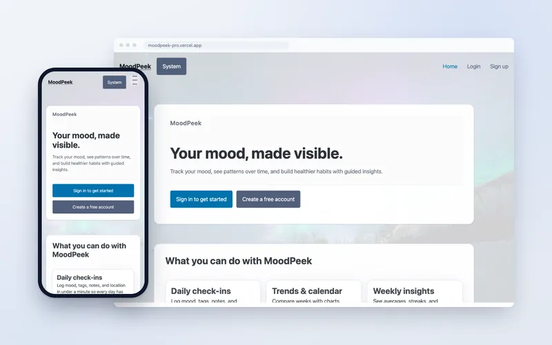
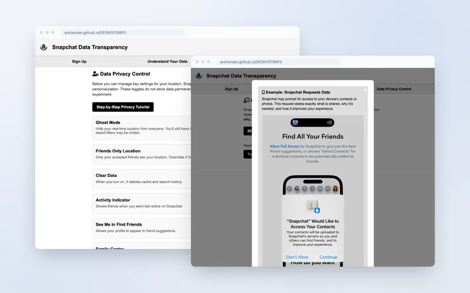

Interaction designer.
Prototypes first, documentation always.
I research, prototype, and test digital products and physical objects — then write down what worked so the next version is better. On the side, I release original music as Antirender.
Five projects that show how I work.
Each one is a full case study: the problem, the versions, the testing, and what changed because of it.

Trafalgar Labyrinth (2026)
A campus-wide escape game across web puzzles, a visual novel, poster AR, a WebXR room and an envelope hidden in the library — two modes, three endings. I led the team and built the hub.
Read case study →
Solar + Storage for AI Compute (2024–26)
A self-built 49 kWp / 180 kWh station on a rented farmhouse roof — powering AI pretraining and inference, sharing the surplus with the village, explored through interactive charts.
Read case study →
MoodPeek Pro (2026)
Calendar-first mood logging built on Day → Week → Month continuity, with multi-user accounts and iCal export.
Read case study →
Snapchat Data Transparency (2025)
Making data collection legible: an interactive Collect → Process → Share → Control flow, iterated across seven wireframe versions.
Read case study →A designer by training. A builder by habit.
- PrototyperFrom Figma to working HTML/CSS/JS in days — every project ships as something you can click.
- ResearcherInterviews, usability tests, and decisions written down so iteration has evidence behind it.
- Front-end builderResponsive, accessible pages; React and auth when the product needs them.
- Physical computingArduino, sensors, NeoPixels, 3D-printed housings, ProtoPie mobile control.
- Sound & visualsSound-reactive p5.js sketches; music composition and production as Antirender.
- Camera & droneAerial footage, event video and post-production since 2021.
Music, on the side.
36 tracks on 7 albums since 2019, self-released as Antirender.
Cover art by TaTa (tataqwq233) ↗
Let’s build something that works.
Open to internships, co-op placements and collaborations in interaction design — and to scoring or sound work for projects that need it.